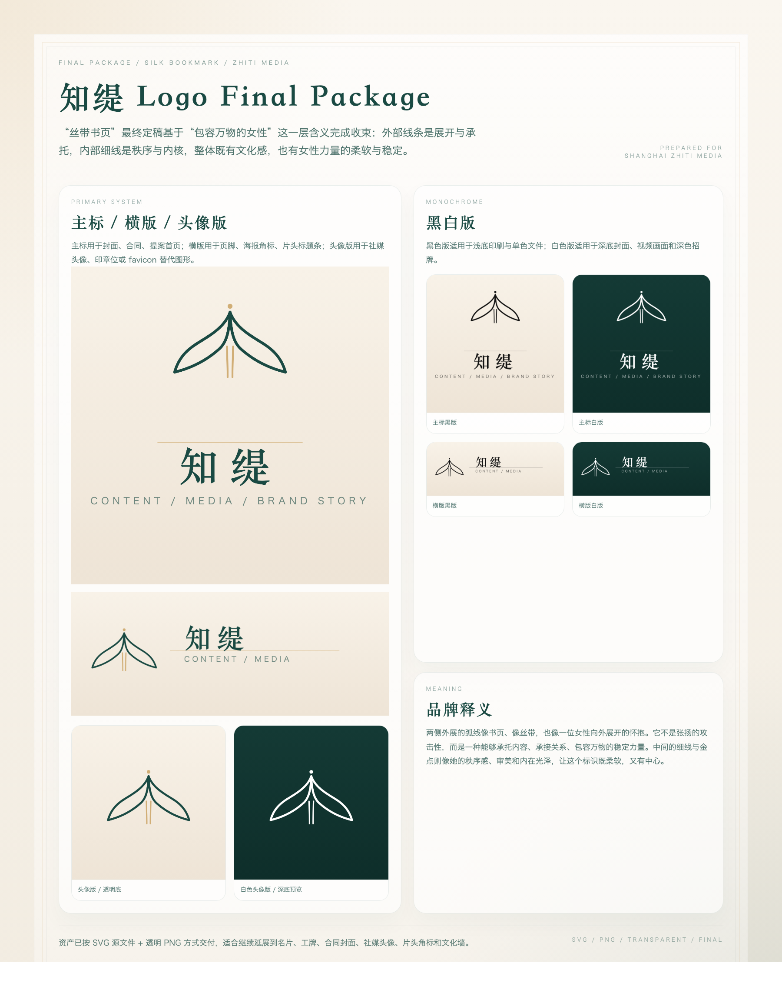
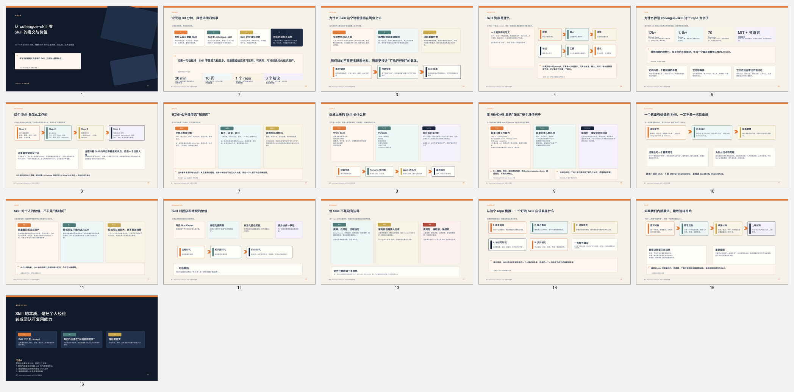
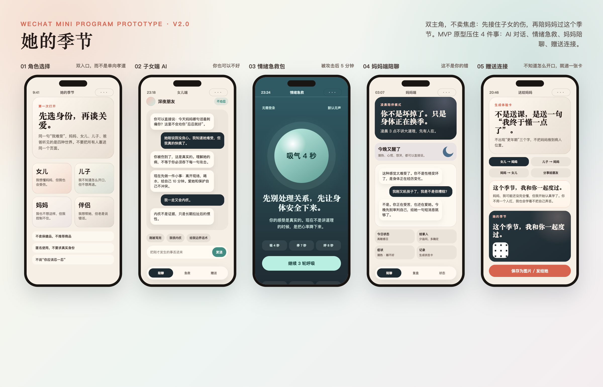
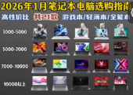

搭建内容生产 Skill、评论区运营 Skill、办公与数据工作流，内容生产效率约 3 倍提升。
AI business operator / Shanghai
王恒 Starry
我把 AI 从“会聊天的工具”，拆成能交付结果的业务系统。
银行研发工程师，2026 年 5 月生财有术·超级 AI 大航海教练。现在的主战场是： AI 编程、个人知识库、Claude Code Skill、小红书 MCN 内容生产与企业流程改造。
30 秒看懂
不是“泛泛的 AI 培训师”。那个定位太宽，宽到没有牙齿。
我最擅长的事，是把一个团队里原本只靠人脑和经验驱动的流程，拆成可复用、可训练、可交付的 AI 工作流。
技术上我能写系统，业务上我懂内容生产。这个组合让 AI 不只停在提示词，而是进入 SOP、数据、交付和增长。
Proof
真实结果，比“我很懂 AI”硬得多。
从零教退休妈妈用 AI 出图、写文案、发布笔记，证明 AI 能赋能非技术普通人。
Claude Code 从零开发，覆盖 Git diff、RAG 检索、并发控制、结构化报告等工程链路。
跑通选品、脚本、PPT、配音、剪辑的内容生产流程，把视频制作变成流水线。
Selected Work
四个项目，构成我的 AI 服务底盘。

01
小红书 MCN AI 改造
深度参与上海知缇文化传媒的内容生产、账号矩阵、评论区运营与财务数据流程。重点不是“写几篇文案”，而是把珍珠的隐性经验拆成团队可复用的 Skill。
- 7 个小红书矩阵账号
- 内容生产效率约 3 倍提升
- 评论区活人感与 SOP 化运营

02
Claude Code Skill 体系
自己开发并沉淀 10+ 个业务 Skill：日记复盘、深度思考、小红书内容生产、评论区运营、飞书数据工作流。真正的价值不是提示词，而是把能力封装成一键执行的工作流。
- 公司内部做过 50-90 分钟 AI 分享
- 让 AI 直接读取 Obsidian 原始知识库
- 把个人经验变成可复用能力单元

03
她的季节 · 更年期家庭关爱小程序
一个“妈妈 + 家人双主角”的微信小程序 MVP。它来自我对妈妈的关心，也说明我的产品判断不只追逐效率，还有人的处境。
- 妈妈端：AI 陪聊、昨日复盘、情绪急救
- 家人端：呼吸动画、理解对话、边界话术
- 下一步：接入真实 AI 与云数据库

04
B 站好物视频自动化
从选品、口播稿、HTML PPT、配音到剪辑，搭建一条可复用的视频生产链路。它的意义是验证：内容生产不是玄学，拆细后可以被 AI 接管大部分步骤。
- AI 替代率 80-90%
- 适合横评、测评、带货类内容
- 已产出测试视频并进入起号阶段
Method
我的方法很简单：先给 AI 事实，再让 AI 干活。
喂真实上下文
从 Obsidian、飞书、项目资料、业务 SOP 里抓材料。没有事实的提示词，只是漂亮废话。
拆隐性经验
把“我凭感觉会做”拆成判断标准、输入材料、流程节点、输出格式和验收标准。
封装成 Skill
让非技术同事也能一句话触发完整工作流，而不是每次都重新调教 AI。
用结果校准
看效率、数据、转化、团队可复制性。AI 不能落到结果上，就只是贵一点的玩具。
Ask Starry
不想读长页面，就直接问。
这个问答只围绕我的经历、项目、能力和合作方向。它不是通用聊天机器人，边界清楚才有用。
你可以问：项目、能力、合作方式、联系方式。我会基于这份个人资料回答。
Contact
如果你有真实业务，直接聊具体问题。
我当前最想连接：做小红书、自媒体、内容电商、MCN、企业培训或内部流程提效的小团队。